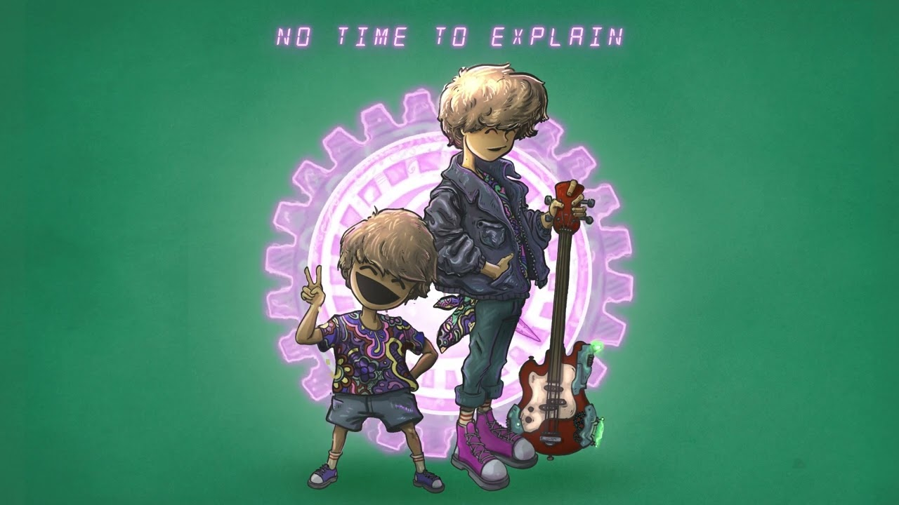

Good Kid 3 (2023) è l'album in cui la loro fama è iniziata nel mondo dell'indie rock.

L'album ha molte canzoni belle e famose, in poche parole, tutti i fan dell'album conoscono e amano tutti i brani.
| # | Titolo | Durata |
|---|---|---|
| 1 | No Time To Explain | 2:36 |
| 2 | Mimi's Delivery Service | 2:58 |
| 3 | Osmosis | 2:53 |
| 4 | First Rate Town | 2:02 |
| 5 | Orbit | 2:19 |
| 6 | Madeleine | 2:53 |
Formazione: Nick Frosst (voce), Jonathon Kereliuk (batteria), Michael Kozakov (basso), David Wood e Jacop Tsafatinos (chitarra).